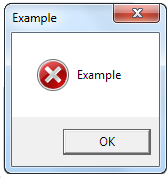

Software - senior - M3 - Diagnostikim (debugging)


- A traceback is read from the bottom (last line)
- range(5) goes 0..4
- The last valid index is len-1
- An off-by-one error is a boundary error
- Reproduce the error first, then fix it
a = [1,2,3]
for i in range(len(a)+1): # GABIM: off-by-one
print(a[i])
# Rregullim: range(len(a))